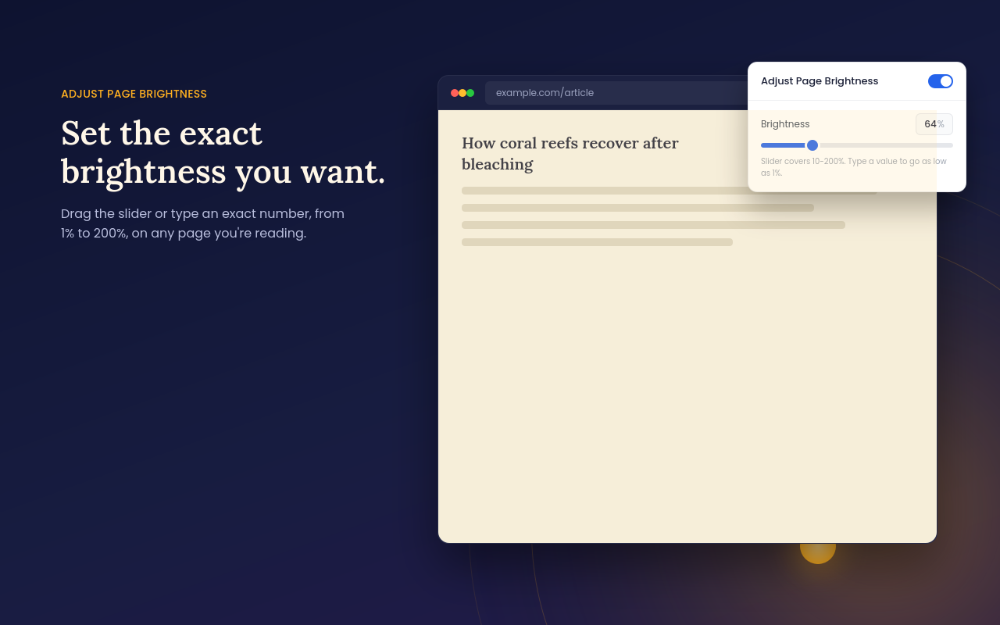
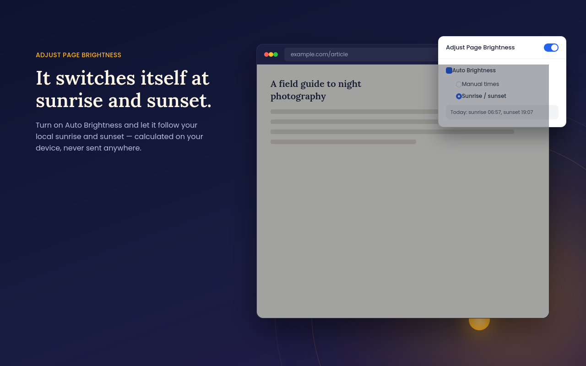
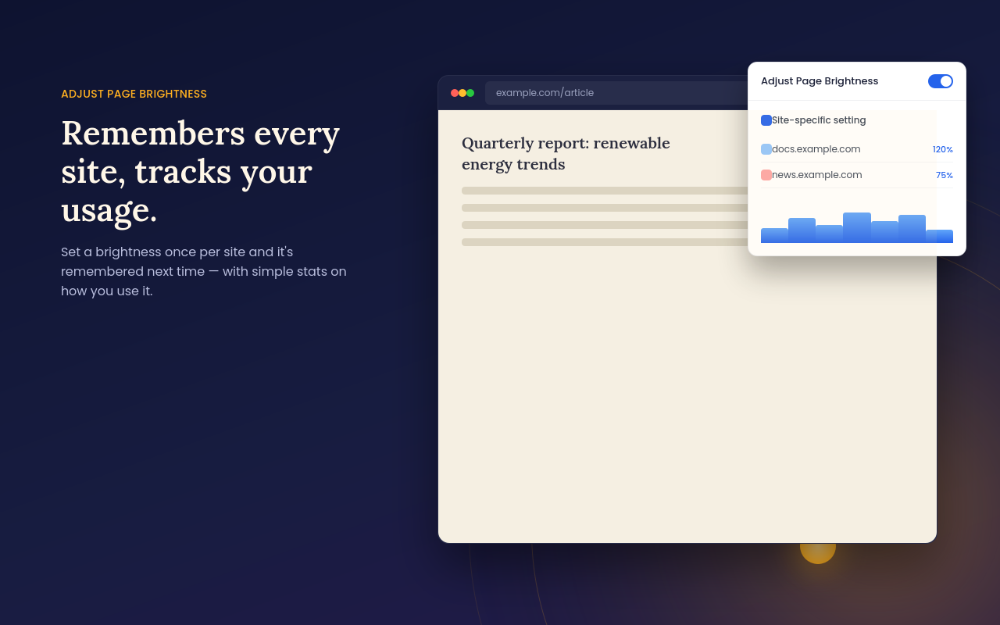

Precise brightness control for every website, with a day/night mode that follows the real sunrise and sunset where you are — calculated entirely on your device.
No account. No data collection. Works offline.

A single popup gives you full control over how bright every page looks.
Slider covers 10%–200%, or type an exact number to go as low as 1%.
Switches between day and night brightness automatically, based on your local sunrise and sunset. Calculated on your device — your location is never sent anywhere.
Set a brightness once for a site and it's remembered automatically the next time you visit.
Prefer fixed times instead? Set your own start times and brightness levels for day and night.
An optional warm-tint filter with a customizable color for late-night reading.
See how you use the extension over time, and export your stats whenever you like.
Adjust brightness without opening the popup — and freely reassign the keys from Chrome's own shortcut settings if they clash with another site or extension.
Right-click anywhere on a page to quickly add it to your managed sites list.
Turn everything off for all sites at once, without losing any of your saved settings.


No accounts, no tracking, no external servers involved in how the extension works.
Data collected or sent to any server
Sunrise/sunset math runs on your device
Works without an internet connection
Every permission explained in our privacy policy